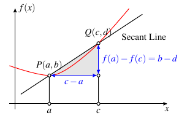
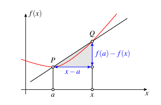
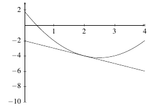
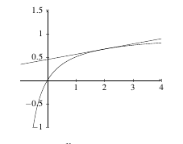
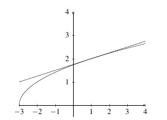

2.7 Derivatives and Rates of Change
The slope of a line is given by the formula \[\text{slope} \; = \; \dfrac{\text{rise}}{\text{run}}.\] Given two points \(P(a,b)\) and \(Q(c,d)\), the slope of the line that connects the two points is \[\text{slope} = \dfrac{b-d}{c-a}.\] As the point \(Q\) gets close to \(P\), the slope of the secant line that connects \(P\) and \(Q\) becomes the same as a tangent line at \(P\). In order to do this, \(c \rightarrow a\). Given this, we have the following definition of a derivative.
|  |
|---|
Definition: The slope of a tangent line (the derivative) of a function \(f\) at a point \(a\) is given by \[f^{\prime}(a) = \lim_{x \rightarrow a} \dfrac{f(x) - f(a)}{x-a}.\] The function \(f^{\prime}(a)\) is called the derivative of \(f\) at \(a\).
|  |
|---|
Example: Let \(f(x) = x^2 - 5x + 2\). Find \(f^{\prime}(2)\).
Solution: We know \[\begin{align*} f^{\prime}(2) &= \lim_{x \rightarrow 2} \dfrac{f(x) - f(2)}{x-2}\\ &= \lim_{x \rightarrow 2} \dfrac{x^2 - 5x + 2 - (2^2 - 5(2) + 2)}{x-2}\\ &= \lim_{x \rightarrow 2} \dfrac{x^2 - 5x + 2 - 4 + 10 - 2}{x-2}\\ &= \lim_{x \rightarrow 2} \dfrac{x^2 - 5x + 6}{x-2}\\ &= \lim_{x \rightarrow 2} \dfrac{(x-2)(x-3)}{x-2}\\ &= \lim_{x \rightarrow 2} x-3\\ &= -1. \end{align*}\] Therefore, \(f^{\prime}(2) = -1\).
|  |
|---|
If we imagine that \(x\) is a number close to \(a\), we can write \(x = a + h\) and take \(x \rightarrow a\) by taking \(h \rightarrow 0\). Rewriting definition \(\ref{defn:derivative}\), we see an alternative form of the derivative \[f^{\prime}(a) = \lim_{h \rightarrow 0} \dfrac{f(a+h) - f(a)}{h}.\]
Definition: The derivative of a function \(f\) at a point \(x\) is the function \(f^{\prime}(x)\) and is defined to be \[f^{\prime}(x) = \lim_{h \rightarrow 0} \dfrac{f(x+h) - f(x)}{h}.\]
The derivative of a function is the slope or rate of change of that function at any point \(x\).
Example: Let \(f(x) = x^3 + x - 5\). Find \(f^{\prime}(x)\).
Solution: We know \[\begin{align*} f^{\prime}(x) &= \lim_{h \rightarrow 0} \dfrac{f(x+h) - f(x)}{h}\\ &= \lim_{h \rightarrow 0} \dfrac{(x+h)^3 + (x+h) - 5 - (x^3 + x - 5)}{h}\\ &= \lim_{h \rightarrow 0} \dfrac{x^3 + 3x^2h + 3xh^2 + h^3 + x+h - x^3 - x)}{h}\\ &= \lim_{h \rightarrow 0} \dfrac{3x^2h + 3xh^2 + h^3 +h )}{h}\\ &= \lim_{h \rightarrow 0} \dfrac{h(3x^2 + 3xh + h^2 +1) )}{h}\\ &= \lim_{h \rightarrow 0} 3x^2 + 3xh + h^2 +1\\ &= 3x^2 +1. \end{align*}\] Therefore, \(f^{\prime}(x) = 3x^2 + 1\).
Practice Problems
- Use definition \(\ref{defn:derivative}\) to determine the following derivatives at the given point.
- \(f(x) = 5x^4 - 3x^3 + x^2 - 5\) at \(a = 1\)
- \(f(x) = 5x^4 - 3x^3 + x^2 - 5\) at \(a = 3\)
- \(f(x) = 7x^3- 2x^2 + x - 10\) at \(a = 0\)
- \(f(x) = 7x^3- 2x^2 + x - 10\) at \(a = -2\)
- \(f(x) = x^4 - 3x^2 + x - 1\) at \(a = 4\)
- \(f(x) = x^6 - x^4 + x^2 + 1\) at \(a = -3\)
- Use definition \(\ref{defn:derivative2}\) to determine the value of \(f^{\prime}(x)\).
- \(f(x) = x^2 - 5x + 1\)
- \(f(x) = 7x^3- 2x^2 + x - 10\)
- \(f(x) = -x^2 + 3x + 10\)
- \(f(x) = 5x^4 - 3x^3 + x^2 - 5\)
- \(f(x) = x^4 - 3x^2 + x - 1\)
- \(f(x) = x^6 - x^4 + x^2 + 1\)
Application: Tangent Lines
The derivative of a function \(f\) at a point \((a,b)\) is the slope of a tangent line to \(f\) at \((a,b)\). Therefore, we can find the equation of a tangent line to \(f\) at \((a,b)\) using the formula \[y-b = f^{\prime}(a)(x-a).\]
Example: Let \(f(x) = \dfrac{x}{x+1}\). Find \(f^{\prime}(x)\) and the equation of a tangent line to \(f\) at \(x=2\).
Solution: We know \[\begin{align*} f^{\prime}(x) &= \lim_{h \rightarrow 0} \dfrac{f(x+h) - f(x)}{h}\\ \\ &= \lim_{h \rightarrow 0} \dfrac{\frac{x+h}{x+h+1} - \frac{x}{x+1}}{h}\\ \\ &= \lim_{h \rightarrow 0} \dfrac{\frac{(x+h)(x+1)}{(x+h+1)(x+1)} - \frac{x(x+h+1)}{(x+1)(x + h + 1)}}{h}\\ \\ &= \lim_{h \rightarrow 0} \dfrac{\frac{(x+h)(x+1)-x(x+h+1)}{(x+h+1)(x+1)}}{h}\\ \\ &= \lim_{h \rightarrow 0} \dfrac{\frac{x^2 + xh + x + h - x^2 - xh - x}{(x+h+1)(x+1)}}{h}\\ \\ &= \lim_{h \rightarrow 0} \dfrac{\frac{h}{(x+h+1)(x+1)}}{h}\\ \\ &= \lim_{h \rightarrow 0} \dfrac{1}{(x+h+1)(x+1)}\\ \\ &= \dfrac{1}{(x+1)^2}. \end{align*}\] Therefore, \(f^{\prime}(x) = \dfrac{1}{(x+1)^2}\).
At \(x = 2\), we have \(y = \dfrac{2}{2+1} = \dfrac{1}{3}\). The slope of \(f\) at \(x = 2\) is \(f^{\prime}(2) = \dfrac{1}{(2+1)^2} = \dfrac{1}{9}\). Therefore, the equation of the tangent line to \(f\) at \(2\) is \[y - \dfrac{2}{3} = \dfrac{1}{9}(x-2).\]
|  |
|---|
Example: Let \(f(x) = \sqrt{x+3}\). Find \(f^{\prime}(x)\) and the equation of a tangent line to \(f\) at \(x=1\).
Solution: We know \[\begin{align*} f^{\prime}(x) &= \lim_{h \rightarrow 0} \dfrac{f(x+h) - f(x)}{h}\\ \\ &= \lim_{h \rightarrow 0} \dfrac{\sqrt{x+h+3} - \sqrt{x+3}}{h}\\ \\ &= \lim_{h \rightarrow 0} \dfrac{\left[\sqrt{x+h+3} - \sqrt{x+3}\right]\left(\sqrt{x+h+3} + \sqrt{x+3}\right)}{h\left(\sqrt{x+h+3} + \sqrt{x+3}\right)}\\ \\ &= \lim_{h \rightarrow 0} \dfrac{x+h+3 - (x+3)}{h\left(\sqrt{x+h+3} + \sqrt{x+3}\right)}\\ \\ &= \lim_{h \rightarrow 0} \dfrac{h}{h\left(\sqrt{x+h+3} + \sqrt{x+3}\right)}\\ \\ &= \lim_{h \rightarrow 0} \dfrac{1}{\sqrt{x+h+3} + \sqrt{x+3}}\\ \\ &= \dfrac{1}{2\sqrt{x+3}}. \end{align*}\] Therefore, \(f^{\prime}(x) = \dfrac{1}{2\sqrt{x+3}}\).
At \(x = 1\), we have \(y = \sqrt{1+3} = 2\). The slope of \(f\) at \(x = 1\) is \(f^{\prime}(1) = \dfrac{1}{2\sqrt{1+3}} = \dfrac{1}{4}\). Therefore, the equation of the tangent line to \(f\) at \(1\) is \[y - 2 = \dfrac{1}{4}(x-1).\]
|  |
|---|
Practice Problems
Find the equation of the tangent line to the function at the given point.
- \(f(x) = 5x^4 - 3x^3 + x^2 - 5\) at \(a = 1\)
- \(f(x) = 7x^3- 2x^2 + x - 10\) at \(a = 0\)
- \(f(x) = x^6 - x^4 + x^2 + 1\) at \(a = -3\)
- \(f(x) = \sqrt{x+1}\) at \(a = 8\)
- \(f(x) = \sqrt{x-5}\) at \(a = 9\)
- \(f(x) = \dfrac{1}{x}\) at \(a = 1\)
- \(f(x) = \dfrac{3}{x-2}\) at \(a = 1\)
- \(f(x) = \sin(x + \pi/2)\) at \(a = \pi\)